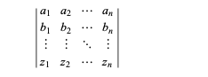
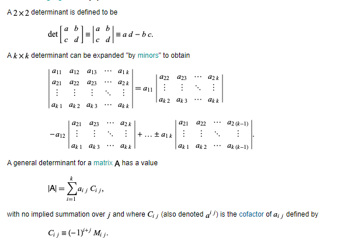
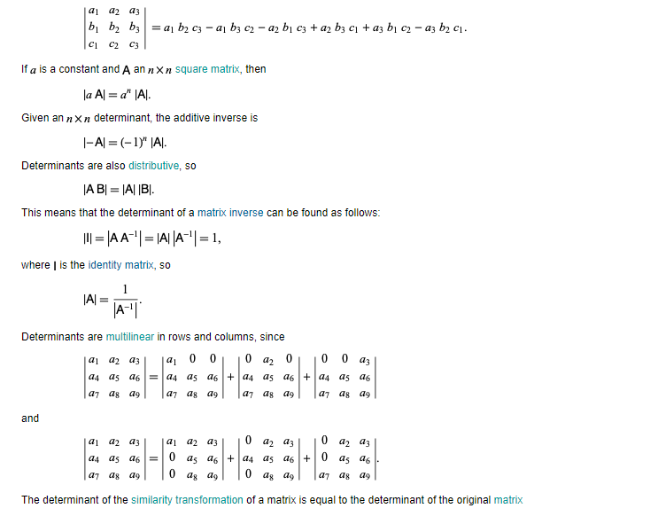
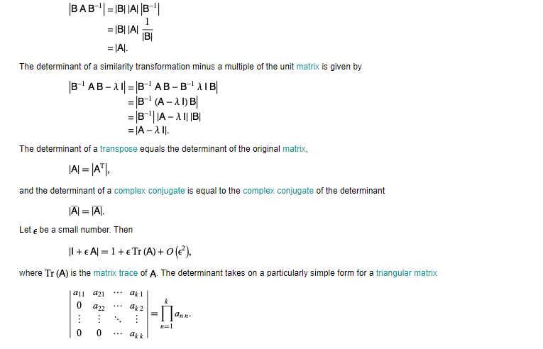
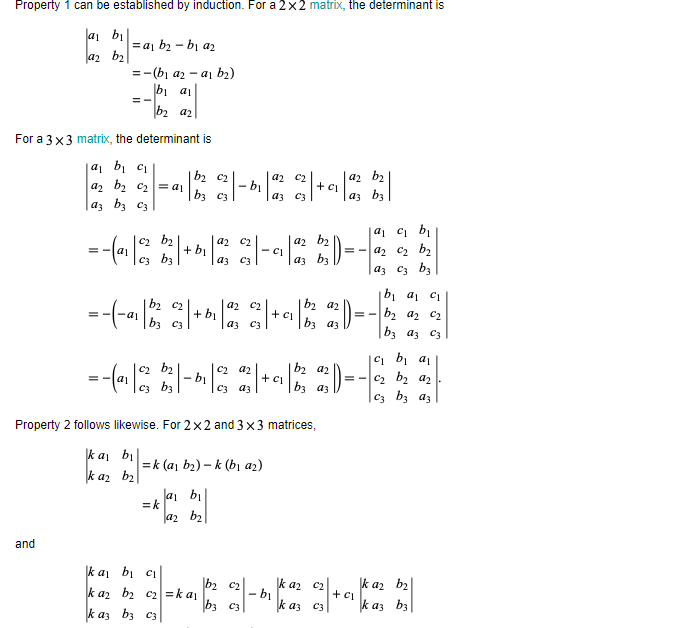
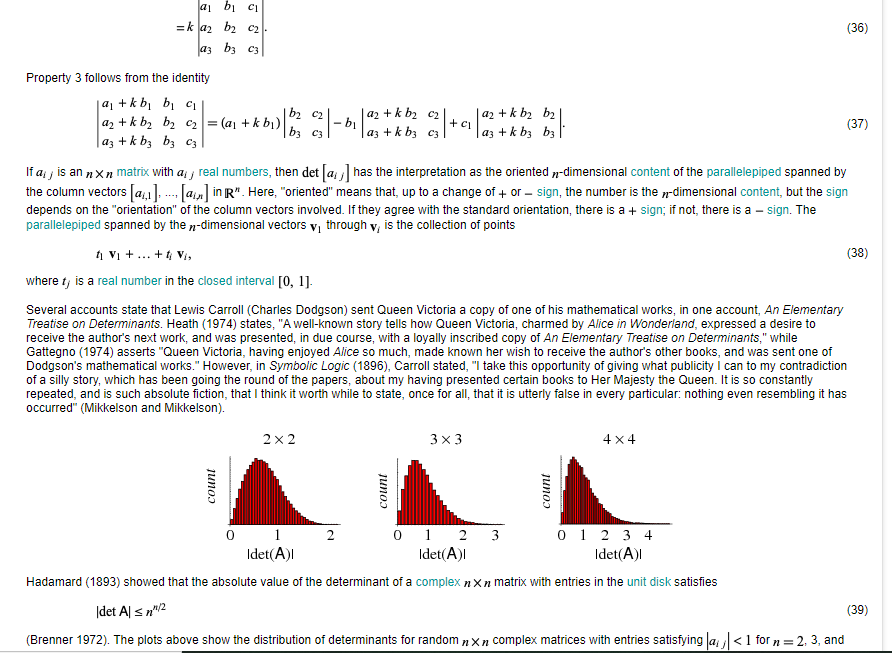
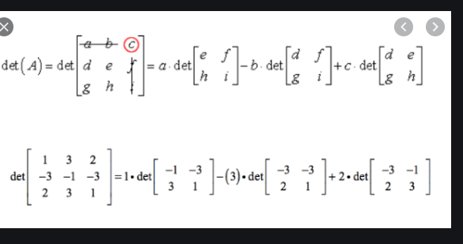
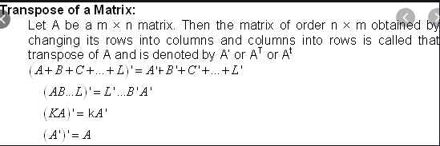

Determinants
Determinants are mathematical objects that are very useful in the analysis and solution of systems of linear equations. As shown by Cramer's rule, a nonhomogeneous system of linear equations has a unique solution iff the determinant of the system's matrix is nonzero (i.e., the matrix is nonsingular). For example, eliminating x, y, and z from the equations
a1x+a2y+a3z = 0.....(1)
b1x+b2y+b3z = 0....(2)
c1x+c2y+c3z = 0 ....(3)
gives the expression
which is called the determinant for this system of equation. Determinants are defined only for square matrices.
If the determinant of a matrix is 0, the matrix is said to be singular, and if the determinant is 1, the matrix is said to be unimodular.
The determinant of a matrix A,

is commonly denoted det(A), |A|, or in component notation as sum(+/-a_1b_2c_3...), D(a_1b_2c_3...), or |a_1b_2c_3...| (Muir 1960, p. 17). Note that the notation det(A) may be more convenient when indicating the absolute value of a determinant, i.e., |det(A)| instead of ||A||. The determinant is implemented in the Wolfram Language as Det[m].

and M_(ij) is the minor of matrix A formed by eliminating row i and column j from A. This process is called determinant expansion by minors (or "Laplacian expansion by minors," sometimes further shortened to simply "Laplacian expansion").
A determinant can also be computed by writing down all permutations of {1,...,n}, taking each permutation as the subscripts of the letters a, b, ..., and summing with signs determined by epsilon_p=(-1)^(i(p)), where i(p) is the number of permutation inversions in permutation p (Muir 1960, p. 16), and epsilon_(n_1n_2...) is the permutation symbol. For example, with n=3, the permutations and the number of inversions they contain are 123 (0), 132 (1), 213 (1), 231 (2), 312 (2), and 321 (3), so the determinant is given by


Important properties of the determinant include the following, which include invariance under elementary row and column operations.
1. Switching two rows or columns changes the sign.
2. Scalars can be factored out from rows and columns.
3. Multiples of rows and columns can be added together without changing the determinant's value.
4. Scalar multiplication of a row by a constant c multiplies the determinant by c.
5. A determinant with a row or column of zeros has value 0.
6. Any determinant with two rows or columns equal has value 0.


Example:

Example:
